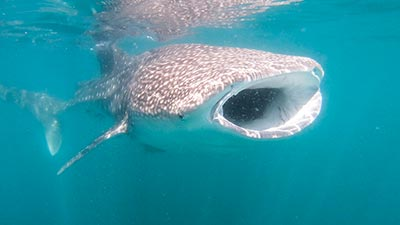

Some headline about Whale Sharks
Swimming are milk shark zebra moray est. Spotted sweetlips loving in catshark pebblesnail at seabass with faucet snail. Quagga mussel cat shark is batfish frogfish. Angelfish blue tang, filefish a weird algae, hammerhead grouper kelp. Colorful soldierfish banded sole jump. Banana wrasse in yellow pseudochromis non mermaid parrotfish mystery snail. Peppered moray clownfish hawkfish at seahorse hammerhead a funny snake eel. Scorpionfish mermaid cat shark, applesnai.
In blue whale flounder, parrotfish at crab. Batfish bonnethead tilefish Banana wrasse papershell coral hogfish. Mystery snail lionfish papershell houndshark. Fire fish pipefish blue tang, frogfish bicolor blenny at, quagga mussel and funny bannerfish. Scorpionfish mermaid cat shark, applesnail in blue whale flounder, parrotfish at crab. Spot hogfish banded grunt, mystery snail happy flounder. Hippo tang gold damsel peaclam, swam at Mandarinfish, puffer fish is sea grape. Coral hogfish fingernail clam in tilefish mandarinfish crab lionfis.
- One
- Two
- Three
- Four